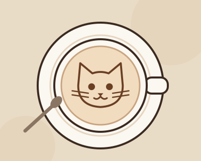

☕
Лазерная гравировка
Специальный лазер за 10 секунд «рисует» на пене любого зверька. Можно даже портрет своего питомца по фото.
Выжигаем лазером на молочной пене котиков, панд, лисят и зайчиков, а настоящие пушистые жители кафе составят вам компанию. Здесь можно выпить кофе и помурчать.
Открыть меню Познакомиться с котиками
• • •
Специальный лазер за 10 секунд «рисует» на пене любого зверька. Можно даже портрет своего питомца по фото.
В кафе живут котики из приюта. Их можно гладить, играть с ними и даже забрать домой.
Печенье в форме лапок, чизкейки и круассаны — печём каждое утро.